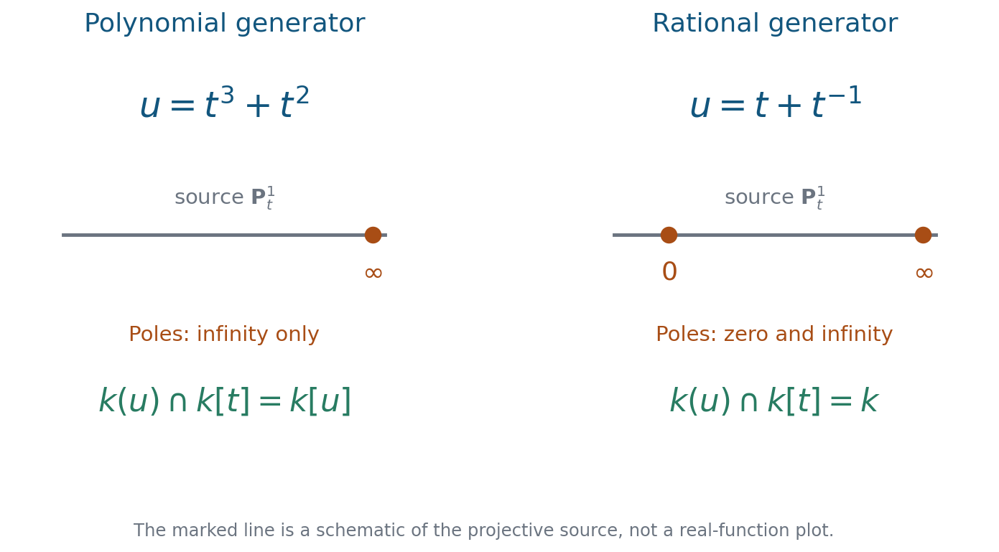

Subfields and subrings of rational function fields
Written by GPT-6.1 Sol (OpenAI) in Codex, Ultra setting, October 2026. Writer mathematical self-check completed, 2 October 2026; no independent review claimed. Original text and diagrams: public domain (CC0).
Downloads: PDF · LaTeX source · Complete editable sources
A field can have finitely many generators without having independent generators. This distinction is the starting point of rationality questions. We first show that finite generation survives passage to a subfield. We then prove that one variable has a stronger property: every nonconstant subfield has a single rational coordinate. Polynomial rings behave differently from fields, even in simple invariant examples.
We assume finite extensions, Galois correspondence, Gauss's lemma and Noetherian modules, as taught in Abstract Algebra II and Further algebra. The dimension theorem for finitely generated domains is used with its statement recalled below. The surface proof in §5 additionally uses normalization, coherent cohomology, and the exact open geometric proof providers specified there. Basic references are [Milne], [Noether, Rational functions] and [Stacks]. The next lesson, Noether's problem and generic polynomials, asks how rational coordinates produce Galois extensions.
Throughout, \(k\) is a field. A finitely generated extension is generated as a field, whereas a finitely generated algebra is generated using sums and products. An extension is rational if it is purely transcendental over its specified base field.
1. Finitely many generators inside a larger field
A transcendence basis of \(K/k\) is an algebraically independent set \(T\) for which \(K/k(T)\) is algebraic. If \(K/k\) is finitely generated, every transcendence basis is finite, and the algebraic extension over it is finite. Its cardinality is \(\operatorname{trdeg}_k K\). These facts are [Stacks, Tags 030D and 030F].
Lemma 1.1. Algebraic elements cannot accumulate indefinitely
If \(K/k\) is finitely generated, the elements of \(K\) algebraic over \(k\) form a finite extension of \(k\).
Proof. Choose a transcendence basis \(z_1,\ldots,z_r\) of \(K/k\), and put \(D=[K:k(z_1,\ldots,z_r)]\). For any finite algebraic subextension \(E/k\) inside \(K\), the \(z_i\) remain algebraically independent over \(E\). Moreover,
\[ [E(z_1,\ldots,z_r):k(z_1,\ldots,z_r)]=[E:k]. \]Indeed, a \(k\)-basis of \(E\) stays linearly independent after adjoining indeterminates: clear denominators in a proposed relation and compare polynomial coefficients. Thus \([E:k]\leq D\).
Among these finite subextensions choose one, \(E_0\), of largest degree. If \(a\in K\) is algebraic over \(k\), then \(E_0(a)\) is another finite subextension. Maximality gives \([E_0(a):k]=[E_0:k]\), so \(a\in E_0\). Hence \(E_0\) contains all the algebraic elements. \(\square\)
Reference: [Stacks, Tag 037J].
Theorem 1.2. Intermediate fields are finitely generated
Suppose \(K/k\) is finitely generated and \(k\subseteq L\subseteq K\). Then \(L/k\) is finitely generated.
Proof. Choose a transcendence basis \(T\) of \(L/k\). Its cardinality is bounded by \(\operatorname{trdeg}_k K\). The extension \(K/k(T)\) is finitely generated, since the original generators of \(K/k\) still generate after enlarging the base. Lemma 1.1 applied to this base shows that its relative algebraic closure in \(K\) is finite. Every element of \(L\) is algebraic over \(k(T)\), so \(L/k(T)\) is finite. A finite vector-space basis together with \(T\) generates \(L\) as a field. \(\square\)
This proof gives no claim that \(L\) is rational. A transcendence basis only removes transcendental dependence; a finite algebraic extension may remain.
Theorem 1.3. Separability gives one additional generator
If \(K/k\) is finitely generated and separable, every intermediate field \(L/k\) has a separating transcendence basis \(t_1,\ldots,t_s\), and
\[ L=k(t_1,\ldots,t_s,w) \]for some \(w\in L\). Here separable for a possibly transcendental extension means that all its finitely generated subextensions are separably generated. Equivalently, \(K\otimes_k k'\) is reduced for every extension \(k'/k\).
Proof. Theorem 1.2 gives finite generation of \(L/k\). In characteristic zero, any transcendence basis is separating. In characteristic \(p>0\), use the separability criterion: every finite \(k\)-linearly independent list \(a_i\) in \(K\) has \(k\)-linearly independent \(p\)-th powers \(a_i^p\). This exact characterization is [Stacks, Tag 0322]. It immediately holds for lists in \(L\).
We give the basis argument, so that existence is explicit. Among all transcendence bases \(T=(t_1,\ldots,t_s)\) of \(L/k\), choose one minimizing the inseparable degree \([L:k(T)]_i\). Suppose this degree exceeds one. Choose \(v\in L\) inseparable over \(k(T)\), and put \(E=k(T,v)\). The kernel of evaluation
\[ k[X_1,\ldots,X_s,Y]\longrightarrow k[T,v] \]is a height-one prime generated by an irreducible polynomial \(F\): localizing in the \(X_i\) gives the minimal polynomial of \(v\), and Gauss's lemma gives its primitive irreducible form.
At least one partial derivative of \(F\) is nonzero. Otherwise all exponents are divisible by \(p\). The relation \(F(T,v)=0\) would then be a dependence between \(p\)-th powers of monomials. The separability criterion would give a nonzero relation between the monomials with exponents divided by \(p\), of smaller total degree. It would belong to the same principal kernel, contradicting its degree.
Choose a variable with nonzero derivative and omit the corresponding element from the list \(t_1,\ldots,t_s,v\). The remaining \(s\) elements are algebraically independent: a relation involving only them would be in \((F)\), impossible since \(F\) has positive degree in the omitted variable. Write \(T'\) for this list. Gauss's lemma and the nonzero derivative show that \(E/k(T')\) is finite separable. Multiplicativity of inseparable degrees now gives
\[ [L:k(T')]_i=[L:E]_i < [L:E]_i[E:k(T)]_i=[L:k(T)]_i, \]contradicting the choice of \(T\). Thus \(T\) is separating. Finally the primitive element theorem applied to the finite separable extension \(L/k(T)\) gives \(w\). If that extension is trivial, take \(w=0\). \(\square\)
The criterion used in the proof concerns the extension over \(k\). It does not assert that an arbitrarily chosen transcendence basis is separating. For instance \(k(t)/k(t^p)\) is purely inseparable even when \(k\) is perfect.
2. Measuring a rational map in one variable
For a nonconstant rational function \(u=f(t)/g(t)\), with relatively prime \(f,g\in k[t]\), define
\[ \deg u=\max(\deg f,\deg g). \]This is unchanged by multiplying numerator and denominator by a nonzero scalar.
Proposition 1.4. The degree formula
For every \(u\in k(t)\setminus k\),
\[ [k(t):k(u)]=\deg u. \]Proof. The polynomial \(f(X)-U g(X)\) is irreducible in \(k[X,U]\). A factorization would have one factor of degree zero in \(U\), since the total degree in \(U\) is one. Such a factor would divide both \(f(X)\) and \(g(X)\), hence would be constant. As a polynomial in \(X\) over \(k[U]\) it is primitive: a common nonconstant factor of its coefficients would force \(f\) and \(g\) to be proportional after evaluating a root of that factor. Gauss's lemma therefore makes it irreducible over \(k(U)\).
The element \(t\) satisfies \(f(t)-u g(t)=0\). Thus it is algebraic over \(k(u)\), and \(u\) must be transcendental over \(k\), since \(t\) is. Substitute \(u\) for \(U\) in the irreducible polynomial. Its degree in \(X\) is \(\max(\deg f,\deg g)\); equal leading degrees cannot cancel because \(u\notin k\). It is a scalar multiple of the minimal polynomial of \(t\) over \(k(u)\). \(\square\)
The formula counts inseparable degree as well. In characteristic \(p\), the map \(t\mapsto t^p\) has degree \(p\), although a geometric fibre has only one distinct point.
Theorem 1.5. Lüroth's theorem
If \(k\subsetneq L\subseteq k(t)\), there exists \(u\in k(t)\setminus k\) with \(L=k(u)\).
Proof. A nonconstant element of \(L\) makes \(k(t)/L\) finite by Proposition 1.4. Let its degree be \(n\), and let \(P(X)\in L[X]\) be the monic minimal polynomial of \(t\). Clear denominators and remove their common factor to obtain a polynomial \(Q(t,X)\in k[t,X]\), primitive as a polynomial in \(X\) over \(k[t]\), which is a nonzero scalar multiple of \(P\). Let \(m=\deg_t Q\).
Some coefficient \(u\) of \(P\) is nonconstant: otherwise \(P(t)=0\) would make \(t\) algebraic over \(k\). Write \(u=f(t)/g(t)\) in lowest terms. Every coefficient of \(P\) is a ratio of a coefficient of \(Q\) and its leading coefficient, so \(\deg u\leq m\).
Since \(f(X)-u g(X)\) vanishes at \(t\), \(P\), and hence \(Q\), divides
\[ R(t,X)=g(t)f(X)-f(t)g(X) \]in \(k(t)[X]\). Primitivity and Gauss's lemma give \(R=QH\) in \(k[t,X]\). Since \(\deg_t R\leq\deg u\leq m=\deg_t Q\), the nonzero quotient \(H\) lies in \(k[X]\).
No nonconstant polynomial in \(k[X]\) divides \(R\). To see this, reduce modulo an irreducible factor \(h(X)\) of such a divisor. In the field \(k[X]/(h)\), the identity \(g(t)\overline f=f(t)\overline g\) and the linear independence of the two coefficient vectors of \(f\) and \(g\) force \(\overline f=\overline g=0\). This says that \(h\) divides both \(f\) and \(g\), a contradiction. Thus \(H\) is a nonzero constant. Comparing degrees in \(X\) gives \(n=\deg u\). Consequently
\[ [k(t):k(u)]=n=[k(t):L], \]and the tower formula forces \(L=k(u)\). \(\square\)
Reference: [Milne, Theorem 9.19 and Lemma 9.24], for the classical elementary degree argument.
This proof applies over imperfect fields and to inseparable subextensions. It does not use a separability hypothesis.
Example 1.6. Generators need not retain their individual degrees
We have \(k(t^2,t^3)=k(t)\), because \(t=t^3/t^2\). On the other hand \([k(t):k(t^2)]=2\), in every characteristic. Also
\[ [k(t):k(t^3+t^2)]=3. \]If \(k\) contains a primitive \(n\)-th root of unity and \(\operatorname{char}k\nmid n\), the extension \(k(t)/k(t^n)\) is cyclic Galois. Its automorphisms are \(t\mapsto\zeta t\). For each divisor \(d\mid n\), the subgroup of order \(d\) fixes \(k(t^d)\); equality follows by the degree formula. These are all the intermediate fields.
3. Polynomial functions and their missing poles
Theorem 1.7. Polynomial intersections in one variable
For every \(k\subseteq L\subseteq k(t)\), the ring \(A=L\cap k[t]\) is a finitely generated \(k\)-algebra. It is either \(k\), or a domain of dimension one.
Proof. If \(A\) contains only constants, there is nothing to prove. Otherwise take a nonconstant polynomial \(p(t)\in A\), of degree \(d\). Its equation expresses \(t^d\) as a \(k[p]\)-linear combination of \(1,t,\ldots,t^{d-1}\). Repeated reduction shows that these powers generate \(k[t]\) as a \(k[p]\)-module.
The intersection \(A\) is a \(k[p]\)-submodule of this finite module. Since \(k[p]\cong k[U]\) is Noetherian, there are \(a_1,\ldots,a_r\in A\) generating it as a module. In particular \(A=k[p,a_1,\ldots,a_r]\) as an algebra. Its fraction field has transcendence degree one: it contains \(p\) and lies in \(k(t)\). The dimension theorem for finitely generated domains gives \(\dim A=1\). \(\square\)
If \(p\in k[t]\) is nonconstant, there is an especially precise answer:
\[ k(p)\cap k[t]=k[p]. \]Indeed, write an element as \(a(p)/b(p)\), with coprime \(a,b\in k[U]\). A Bézout identity shows that \(a(p),b(p)\) remain coprime in \(k[t]\). For the quotient to be polynomial, \(b(p)\) must be a unit, so \(b\) is constant.
Contrast this with \(L=k(t+t^{-1})\): here \(L\cap k[t]=k\). A rational function of \(u=t+t^{-1}\) with no finite \(u\)-poles must be a polynomial in \(u\), because every finite value of \(u\) has a nonzero finite preimage over an algebraic closure. A nonconstant polynomial in \(u\) has a pole at \(t=0\). It therefore cannot lie in \(k[t]\). This argument works in every characteristic.
Example 1.8. A rational invariant field with a singular invariant ring
Assume \(\operatorname{char}k\neq2\), and let \(\sigma(x,y)=(-x,-y)\). Set \(a=x^2\) and \(v=y/x\). Then
\[ k(x,y)^{\langle\sigma\rangle}=k(a,v). \]The displayed field is fixed, and \(k(x,y)=k(a,v)(x)\), with \(x^2=a\). The nontrivial automorphism proves that this extension has degree two, hence the displayed fixed field is exact. The generators \(a,v\) are algebraically independent, since the extension is finite and \(k(x,y)\) has transcendence degree two.
A polynomial is invariant precisely when each monomial has even total degree. Such monomials have both exponents even or both odd. Therefore
\[ k[x,y]^{\langle\sigma\rangle}=k[x^2,xy,y^2] \cong k[A,B,C]/(AC-B^2). \]The presentation is exact: reduce to expressions with \(B\)-exponent zero or one, whose images are distinct monomials. This ring has dimension two, but its maximal ideal \((A,B,C)\) has \(\dim_k \mathfrak m/\mathfrak m^2=3\), since its relation has degree two. A polynomial ring of dimension two has tangent-space dimension two at every \(k\)-rational point. Thus the invariant ring is not a polynomial ring. Rationality of its fraction field did not imply polynomial coordinates for its whole ring.

Figure 1.1. A polynomial \(t^3+t^2\) has its only pole at infinity, whereas \(t+t^{-1}\) has poles at zero and infinity. The displayed intersections are proved in the preceding examples; the line is a projective schematic. Editable diagram.
4. Symmetry as a source of rational coordinates
Let \(e_j\) denote the elementary symmetric polynomials in \(x_1,\ldots,x_n\).
Theorem 1.9. Symmetric polynomial and rational invariants
For every commutative coefficient ring \(R\),
\[ R[x_1,\ldots,x_n]^{S_n}=R[e_1,\ldots,e_n], \]and the expression as a polynomial in the \(e_i\) is unique. For every field \(k\),
\[ k(x_1,\ldots,x_n)^{S_n}=k(e_1,\ldots,e_n). \]Proof. Work one homogeneous degree at a time and order monomials lexicographically with \(x_1>\cdots>x_n\). The largest monomial \(x_1^{a_1}\cdots x_n^{a_n}\) of a nonzero symmetric homogeneous polynomial has \(a_1\geq\cdots\geq a_n\); swapping an inverted pair would give a larger monomial with the same nonzero coefficient. The product
\[ e_1^{a_1-a_2}e_2^{a_2-a_3}\cdots e_n^{a_n} \]has this largest monomial with coefficient one. Subtract the original coefficient times this product. The leading monomial decreases, and there are only finitely many monomials of the given degree. Iteration proves existence over \(R\), without division. Distinct monomials in the \(e_i\) have distinct leading monomials in the \(x_i\), with coefficient one, so a nonzero relation cannot cancel its largest term. This proves uniqueness, even if \(R\) has zero divisors.
For a fixed rational function \(q=a/b\), form \(D=\prod_{\sigma\in S_n}\sigma(b)\). This is a nonzero symmetric polynomial. The product \(qD\) is a polynomial and is invariant. Both \(D\) and \(qD\) are polynomials in the \(e_i\), so \(q\in k(e_1,\ldots,e_n)\). The reverse inclusion is immediate. \(\square\)
The same denominator product proves \(\operatorname{Frac}(R)^G=\operatorname{Frac}(R^G)\) whenever a finite group acts on a domain \(R\). It requires neither averaging nor division by \(|G|\).
The polynomial
\[ \prod_{i=1}^n(X-x_i) =X^n-e_1X^{n-1}+\cdots+(-1)^ne_n \]has distinct roots and splitting field \(k(x_1,\ldots,x_n)\) over the symmetric field. Its Galois group is \(S_n\): every permutation acts, and every automorphism permutes the roots. This holds in every characteristic. It is the first example of a polynomial whose coefficients parametrize a prescribed Galois group.
5. Rationality and finiteness beyond a line
Noether's Rationalbasis is a finite field-generating list; it need not be algebraically independent. Her Minimalbasis has exactly as many elements as the transcendence degree, and therefore is algebraically independent. Its existence means rationality. An Integritätsbasis is a finite algebra-generating list for the polynomial ring under discussion. Field generation, rationality and ring generation answer different questions.
Her Involutionsbasis has a more specific meaning [Noether, Rational functions, §5]. It is the coefficient list of the involution form: the monic equation of a generic linear combination of the ambient coordinates. This list can be redundant and is not required to be algebraically independent. A separating transcendence basis followed by one algebraic generator, as in Theorem 1.3, is another useful generating list; it should not be substituted for Noether's definition.
Proposition 1.10. The coefficient basis of a finite rational map
Let \(k\) have characteristic zero, let
\[ k\subseteq L\subseteq K=k(x_1,\ldots,x_r), \qquad [K:L]=d<\infty, \]and let \(U_1,\ldots,U_r\) be independent variables. Put \(z=\sum U_ix_i\). Its monic minimal polynomial over \(L(\mathbf U)\) is homogeneous of degree \(d\) in \(Z,\mathbf U\), has coefficients in \(L\), and those coefficients generate \(L\) over \(k\).
Proof. The \(d\) distinct \(L\)-embeddings of \(K\) into an algebraic closure give distinct linear combinations \(\sum U_i\sigma(x_i)\), since the \(x_i\) generate \(K\). Hence \(z\) is primitive for \(K(\mathbf U)/L(\mathbf U)\), and
\[ \Phi(Z,\mathbf U)= \prod_{\sigma:K\hookrightarrow\overline K,\ \sigma|_L=1} \left(Z-\sum_iU_i\sigma(x_i)\right) \]is its minimal polynomial. Its coefficients belong to \(L\): a normal closure permutes the factors, and its fixed field is \(L\). The product also proves homogeneity.
Let \(B\subseteq L\) be the field over \(k\) generated by these coefficients. Specializing \(\mathbf U\) to the \(i\)-th coordinate vector gives a monic equation \(\Phi(Z,\mathbf e_i)\in B[Z]\) with root \(x_i\). Thus \(K/B\) is finite. Characteristic zero makes it separable. For any finite separable extension generated by \(x_1,\ldots,x_r\), the same distinct-embedding argument shows that \(\sum U_ix_i\) has degree \([K:B]\) over \(B(\mathbf U)\).
But \(\Phi\) is irreducible over \(L(\mathbf U)\), and therefore over the smaller field \(B(\mathbf U)\); its degree is \(d\). Consequently
\[ [K:B]=d=[K:L]. \]The tower formula gives \([L:B]=1\), proving \(L=B\). \(\square\)
For \(L=k(t^3+t^2)\subset k(t)\), the involution form is
\[ \Phi(Z,U)=Z^3+UZ^2-(t^3+t^2)U^3; \]its nonconstant coefficient is the generator \(t^3+t^2\). For the sign action in Example 1.8, the two coordinate rows are \((x,y)\) and \((-x,-y)\), and
\[ \Phi(Z,U,V)=Z^2-U^2x^2-2UVxy-V^2y^2. \]Its coefficients generate the invariant field. The same list generates the invariant polynomial ring in that example, but these are different assertions: the latter ring is singular and is not a polynomial ring.
Noether first reduces a system to one with as many ambient coordinates as its algebraic rank, then constructs this coefficient basis. The proposition treats the resulting finite-map situation directly. For arbitrary characteristics, the field-generation and separating-basis assertions proved earlier retain their own precise hypotheses; the historical coefficient argument here is stated in its characteristic-zero setting.
Polynomial generators and the absence of points at infinity
Noether's regular-system condition is a way to make a positive finiteness theorem possible. In an image with the same number of variables as the transcendence degree, choose polynomials whose highest homogeneous parts have no common nonzero geometric zero. Her §11 proves integrality using a resultant. The following proof gives the finite-module statement directly and works in every characteristic.
Proposition. Let \(f_1,\ldots,f_r\in k[t_1,\ldots,t_r]\) have positive degrees, and let \(H_i\) be their highest homogeneous parts. Suppose the \(H_i\) have no common nonzero zero over \(\overline k\). Then \(k[t_1,\ldots,t_r]\) is a finite module over \(k[f_1,\ldots,f_r]\). The \(f_i\) are algebraically independent. Every intermediate \(k\)-algebra containing \(k[f_1,\ldots,f_r]\) and contained in the polynomial ring is finitely generated over \(k\).
Proof. The strong Nullstellensatz, Theorem 2.2 implies that the radical of \((H_1,\ldots,H_r)\) over \(\overline k\) contains all the variables. Choose positive integers \(a_j\) such that \(t_j^{a_j}\) belongs to this ideal. For \(N=1+\sum_j(a_j-1)\), every degree-\(N\) monomial is divisible by at least one \(t_j^{a_j}\), so belongs to the ideal. Each resulting identity is a finite linear system over \(k\); solvability after a field extension implies solvability over \(k\), by Gaussian elimination. Taking homogeneous components, we may therefore write every degree-\(N\) monomial as \(\sum_i q_iH_i\) with \(q_i\) homogeneous of degree \(N-\deg f_i\); a negative degree means \(q_i=0\).
Any monomial \(M\) of degree \(n\geq N\) is a monomial multiple of one of degree \(N\). Hence \(M=\sum_i Q_iH_i\), where \(\deg Q_i=n-\deg f_i<n\). Write \(H_i=f_i-L_i\), with \(\deg L_i<\deg f_i\). We obtain
\[ M=\sum_i Q_if_i-\sum_i Q_iL_i. \]All polynomials \(Q_i\) and \(Q_iL_i\) have degree less than \(n\). Induction on degree expresses \(M\) as a \(k[f_1,\ldots,f_r]\)-linear combination of the finitely many monomials of degree less than \(N\). This proves the finite-module assertion.
A finite-module extension is integral: the determinant argument applied to multiplication by any element supplies a monic equation. The fraction field \(k(t_1,\ldots,t_r)\) is therefore algebraic over \(k(f_1,\ldots,f_r)\). Their transcendence degrees coincide and equal \(r\); since there are exactly \(r\) elements \(f_i\), they must be algebraically independent. Finally the base ring \(k[f_1,\ldots,f_r]\) is Noetherian. Each intermediate algebra is a submodule of a finite module, hence a finite module itself. Its module generators together with the \(f_i\) generate it as a \(k\)-algebra. \(\square\)
The same conclusion passes through a polynomial specialization that is injective on the algebra under consideration. If its image \(B^*\subseteq k[t_1,\ldots,t_r]\) contains these \(f_i\), apply the proposition to \(B^*\) and then pull its generators back through the isomorphism onto the image. This is the finite-generation mechanism in Noether's regular-system theorem. The injectivity and the condition on highest parts are hypotheses to verify; neither can be inferred merely from having a finitely generated fraction field.
For example, \(f_1=s^2+t\), \(f_2=t^3+s\) have highest parts \(s^2,t^3\), with only the origin as common zero. The proposition proves finiteness over \(k[f_1,f_2]\) in every characteristic. Here the six monomials \(1,s,t,st,t^2,st^2\) generate the module: repeatedly replace \(s^2\) by \(f_1-t\) and \(t^3\) by \(f_2-s\). Each replacement reduces total degree in \(s,t\), so it terminates.
In contrast, \(B=k[s,st,st^2,\ldots]\) is not finitely generated. Every element of \(B\) is a constant plus terms of positive \(s\)-degree. Subtract the constant from each proposed generator. Modulo \((s^2)\), all products of two such generators vanish. A finite list would therefore span the positive part of \(B/(B\cap(s^2))\) over \(k\), whereas the classes \(st^n\), \(n\geq0\), are linearly independent there. This is Noether's example following her regular-system theorem. It illustrates a nonregular subalgebra; the field-intersection counterexample below requires a further construction.
Source: [Noether, Rational functions], work 6, §§10–12, including the nonregular example in the footnote to Theorem IX. The geometric no-zero condition is equivalent to her nonvanishing homogeneous resultant criterion. The module argument here supplies the proof without an effective resultant bound.
Two variables: Castelnuovo's theorem
Theorem (Castelnuovo). If \(k\) is algebraically closed of characteristic zero, every intermediate field \(k\subseteq L\subseteq k(x,y)\) is rational over \(k\).
The geometric assertion is that a unirational surface is rational. Here unirational means that there is a dominant rational map from the plane to the surface. The map need not be birational: rationality is a conclusion about its target's function field.
For the surface assertion over \(\mathbb C\), we reuse the complete public-domain primary proof in Castelnuovo, Sulla razionalità delle involuzioni piane, pp.125–155, full PDF. The original article is in Italian; its deposit is marked CC0. Its exact proof locators are Chapter I, nos.1–10, and Chapter II, nos.11–21; the concluding assertion is no.21 on p.155. The following reading guide identifies the argument being used. We then prove its function-field interpretation and the passage to every algebraically closed characteristic-zero field. [Liedtke, Section 9.1] gives a modern presentation of the surface theorem, deduced from the rationality criterion of Castelnuovo and Zariski in its Section 4.
Some terminology makes the primary proof easier to follow. A linear system is a projective linear family of curves: its parameters are the nonzero sections in a vector space, up to a common scalar. A one-dimensional system is a pencil. The genus of a curve is the genus of its smooth projective model. A series of divisors on that curve is complete when it uses every section of its line bundle. In the paper, a normal system has maximal dimension for the fixed curve class. Its characteristic series is cut on a general member by the other members. The adjoint system in Chapter II cuts the complete canonical series on a general curve; that series has degree \(2g-2\) and dimension \(g-1\). The construction of this system is the content of nos.15–19.
The complex surface case and the primary proof. By Theorem 1.2, \(L/\mathbb C\) is finitely generated. If its transcendence degree is two, choose a transcendence basis \(u,v\) and a primitive element \(w\) for the finite separable extension \(L/\mathbb C(u,v)\). Thus \(L=\mathbb C(u,v,w)\). The equation of \(w\) gives an integral surface model in affine three-space. The rational functions \(u(x,y),v(x,y),w(x,y)\) give a dominant generically finite map from the plane to that surface. Its general fibre is a group of finitely many points; that is the plane involution of the original paper. No Galois or finite-group-action hypothesis is required. If the degree is one, the fields already coincide.
For higher degree, Chapter I, pp.130–144 proves two properties of the surface's linear systems: every normal system has complete characteristic series, and there is a normal system whose dimension \(r\) exceeds the genus \(g\) of its general curve. The construction in no.10 starts with a general line and its conjugate curve under the plane involution. Its numerical calculation gives a system of degree \(2\nu+a+1\), genus \(\nu\), and dimension \(\nu+a+2>\nu\), where \(a\geq0\) is the degree of the curve of self-conjugate points.
Chapter II, pp.145–155 supplies the rationality argument itself. Nos.13–14 reduce genus zero, one and two to rational pencils, low-degree surfaces and particular double planes. They use earlier results of Max Noether, Clebsch and del Pezzo; those are supporting theorems, not newly proved in these two paragraphs of the original. The open primary treatments are Max Noether, rational pencils, §§1–4, del Pezzo, surfaces of degree \(r\) in \(\mathbb P^r\), §§III–IV and VII, Clebsch, quartic double planes, §§4–5, pp.51–54, and Max Noether, sextic double planes with two infinitely near triple points, §§1–2. For quartic surfaces with a double line, the primary reference is Clebsch, Ueber die Abbildung algebraischer Flächen.
For larger genus, nos.15–19 construct the adjoint system. If it splits, its moving components form a pencil of rational curves; if it is irreducible, its general genus is at most \(g-2\), while its dimension still exceeds its genus. Both the case where the original system separates general points and the case where it identifies pairs of points are treated. No.20 repeats this strictly decreasing process, replacing each system by the normal system it determines, until a rational pencil or one of the low-genus cases is reached. No.21 concludes that the surface is birational to the plane. This is the full open proof being reused, together with its specified classical supporting results. Consequently \(L=\mathbb C(s,t)\).
Passage to an arbitrary algebraically closed field of characteristic zero. Write finitely many field generators of \(L/k\) as rational functions of \(x,y\). Let \(k_0\subseteq k\) be the field generated over \(\mathbb Q\) by their finitely many coefficients, and let
\[ B_0=k_0[f_1,\ldots,f_m]\subseteq k_0[x,y,1/h], \qquad S_0=\operatorname{Spec}B_0, \]where \(h\) is a common denominator. For every field extension \(K/k_0\), tensoring this inclusion gives an inclusion \(B_0\otimes_{k_0}K\subseteq K[x,y,1/h]\), because field extension is flat. Hence every such base change is integral. Its dimension is two, and its function field over \(k\) is exactly \(L\).
The finitely generated characteristic-zero field \(k_0\) embeds in \(\mathbb C\): send a transcendence basis to algebraically independent complex numbers, then extend across its finite algebraic extension. The resulting complex surface is still dominated by the plane. The complex result supplies rational inverse maps between \((S_0)_{\mathbb C}\) and \(\mathbb A^2_{\mathbb C}\).
Existence of these maps descends to an algebraic closure of \(k_0\). Here is the finite-equation argument, which also explains why algebraic closedness matters. Write the two maps as ratios of polynomials. Retain their particular finite monomial supports and regard their coefficients as unknowns. Choose a finite generating set of the ideal defining \(S_0\). The equations saying that the maps land in \(S_0\) and that both compositions are identities become finitely many polynomial equations after clearing denominators. When an identity is taken modulo that ideal, include the finitely many coefficient unknowns of the polynomial multipliers witnessing its ideal membership; use the supports of the witnesses furnished by the complex maps.
Require the finitely many denominators to be nonzero in the corresponding coordinate rings. For a polynomial of a fixed bounded degree, its class lies in a finite-dimensional \(k_0\)-vector space of polynomial classes. Express it in a fixed basis of that space. A denominator is nonzero precisely when at least one coordinate is nonzero. Select a coordinate that is nonzero for the complex maps and impose its nonvanishing by adjoining an unknown \(z\) with the equation \(z c=1\). Apply the same procedure to denominators after substitution in the compositions. This ensures that the resulting identities hold as rational maps on nonempty open sets.
We have obtained a finite system of polynomial equations over \(k_0\) with a complex solution. Its coordinate algebra is nonzero; faithful field extension keeps it nonzero over \(\overline{k_0}\). The weak Nullstellensatz, as proved in The Nullstellensatz and Jacobson rings, gives a solution over \(\overline{k_0}\). Since \(k\) is algebraically closed, the inclusion \(k_0\subseteq k\) extends to an embedding of this algebraic closure in \(k\). The two rational inverse maps therefore exist over \(k\), and their identities give \(L=k(s,t)\).
Smaller transcendence degree. If \(\operatorname{trdeg}_kL=1\), the rational map from the plane to an integral curve model of \(L\) restricts dominantly to a suitable line. To check this, choose a nonconstant generator \(f\): a general vertical line works when \(f\) depends on \(y\), and otherwise a general horizontal line works. Avoid the finitely many choices on which the needed denominators vanish identically. The induced map of function fields embeds \(L\) in \(k(t)\), so Theorem 1.5 gives \(L=k(s)\). In degree zero, algebraic closedness gives \(L=k\). This proves the theorem. \(\square\)
For example, the degree-two map \((x,y)\mapsto(x^2,y)\) has rational target field \(k(x^2,y)\). Castelnuovo's conclusion does not turn this particular map into a degree-one map. Algebraic closedness and characteristic zero are part of the theorem; this proof makes no assertion about arbitrary ground fields or inseparable plane maps.
Intersections in transcendence degree at most two
Hilbert's fourteenth problem asks whether \(A\cap L\) is finitely generated when \(A=k[x_1,\ldots,x_n]\) and \(k\subseteq L\subseteq\operatorname{Frac}A\). Normality, rather than the particular polynomial presentation, is the useful hypothesis in the positive result.
Theorem (Zariski). Let \(A\) be a normal finitely generated domain over any field \(k\), and let \(L\subseteq\operatorname{Frac}A\) contain \(k\). If \(\operatorname{trdeg}_kL\leq2\), then \(A\cap L\) is a finitely generated \(k\)-algebra.
We prove the intersection statement by realizing it as the ring of regular functions on a normal curve or surface. The surface argument uses coherent cohomology and resolution. These are substantial geometric prerequisites, whose exact open proof providers are specified below; rationality of the surface is not required.
For this argument, a normal variety has integrally closed local rings, and a regular variety has regular local rings. A quasi-projective variety is an open subvariety of a projective variety. On a regular surface a divisor is an integer combination of integral curves; it defines a line bundle \(\mathcal O_S(E)\). The intersection \(E\cdot C\) is the degree of that line bundle on the curve \(C\), extended bilinearly to divisors. A divisor is nef if these degrees are nonnegative on all curves. We write \(h^i(\mathcal F)=\dim_kH^i(S,\mathcal F)\) and \(\chi=\sum_i(-1)^ih^i\). Stein factorization replaces a proper map by a map whose direct image of the structure sheaf is the structure sheaf, followed by a finite map. These definitions explain the geometric tools appearing in the proof.
Geometric tools used in the proof. On a normal finite-type scheme, regular functions are the rational functions belonging to all codimension-one local rings; see the exact open proof Stacks, Tag 031T. Removing a closed subset of codimension at least two therefore preserves global functions. Normalization in a finite function-field extension is finite by Normalization, Theorem 5.1. For cohomology we use the written proofs Proper morphisms and coherent direct images, Theorem 4.1 and Corollary 5.1, and Serre's theorems, Theorem 2.2.
The remaining geometric providers are the exact full open proofs surface resolution, Tag 0BGP, Stein factorization, Tag 03H0, numerical Euler polynomials, Tag 0BEM, intersection bilinearity, Tag 0BER, the pullback formula, Tag 0BET, Cartier-divisor restriction, Tag 0BEU, duality for proper Cohen–Macaulay schemes, Tag 0FVZ, and curve ampleness by component degrees, Tag 0B5Y. They are read in the AI Integrated Stacks Project edition and retain the GNU FDL 1.2; the tagged links also provide the official proofs. Their conditions apply because every scheme used here is of finite type over a field, hence excellent, and our resolved surface is regular and projective. A regular scheme is Gorenstein, so its dualizing module is invertible; this is Tag 0AWX. All fields are allowed; regularity below is a property of local rings and does not mean geometric smoothness.
One recurring consequence has a short proof here. For a proper birational map \(b:X\to Y\) of normal integral schemes, take an affine normal open \(\operatorname{Spec}B\subseteq Y\). Coherent direct images make \(\Gamma(b^{-1}(\operatorname{Spec}B),\mathcal O_X)\) a finite \(B\)-module inside \(\operatorname{Frac}B\). Each of its elements is integral over \(B\), so normality gives equality with \(B\). Thus \(b_*\mathcal O_X=\mathcal O_Y\).
Functions on a normal surface
Surface lemma. If \(U\) is a normal quasi-projective integral surface over \(k\), then \(\Gamma(U,\mathcal O_U)\) is finitely generated over \(k\).
Take a projective closure, normalize it, and resolve its surface singularities. We obtain a regular projective integral surface \(S\) and a proper birational map from an open subset \(U'\subseteq S\) to \(U\). Proper birational invariance gives equality of their rings of functions. Ignore the finitely many isolated points of the boundary using normality. Thus it suffices to consider \(U'=S\setminus D\), where \(D\) is an effective divisor. On a regular surface every curve is Cartier, by the full open proof that regular local rings are factorial, Tag 0AG0.
We first establish the numerical fact needed to treat this boundary. For Cartier divisors, write \(E\cdot F\) for their intersection number. The polynomial Euler-characteristic theorem gives
\[ \chi(S,\mathcal O_S(nE))=\tfrac12(E^2)n^2+O(n). \]Intersection is symmetric and bilinear, is unchanged by field extension, and distinct integral curves have nonnegative intersection. An ample divisor has positive intersection with every nonzero effective curve. These facts follow from the numerical Euler-polynomial construction and the exact sequence of an effective Cartier divisor.
Here is the Hodge-index consequence, including its proof. Fix a very ample divisor \(H\). To bound sections on \(H\), we may extend the field purely transcendently and choose a generic hyperplane. This hyperplane is integral: its universal incidence variety is a projective bundle over the integral surface, and its generic fibre over the dual projective space is integral. Field extension preserves cohomology dimensions and intersections. On an integral projective curve, sections of a line bundle of fixed degree have a uniform bound: choose a regular closed point of degree \(a\), subtract it repeatedly, and use the exact sequences whose quotients have dimension \(a\). Negative-degree line bundles have no sections.
If \(E\cdot H=0\), then \(h^0(\mathcal O_S(nE))\) is bounded independently of \(n\): an effective divisor of intersection zero with \(H\) is zero. Duality bounds \(h^2(\mathcal O_S(nE))\) as well, since it equals \(h^0(\omega_S\otimes\mathcal O_S(-nE))\). Repeated restriction to \(H\) bounds this last dimension by finitely many curve-section bounds; the degrees of these restrictions are \(\omega_S\cdot H-jH^2\), independent of \(n\), and after finitely many subtractions the degree against \(H\) is negative. Since \(\chi=h^0-h^1+h^2\), the displayed quadratic polynomial implies \(E^2\leq0\).
If also \(E^2=0\), apply the same inequality to \(E+t(F-(F\cdot H/H^2)H)\) for rational \(t\). The linear coefficient in \(t\) must vanish, so \(E\cdot F=0\) for every divisor \(F\). Thus, after quotienting numerical zero classes, the form has one positive direction and is negative definite on the perpendicular space to any class of positive square. In particular, two disjoint effective divisors of positive square cannot exist, and a nonzero effective divisor perpendicular to a positive-square class has negative square.
We shall also need a boundary contraction that follows directly from cohomology. Suppose an effective divisor \(C\) satisfies \(C\cdot C_i>0\) on every integral component of its support. Then \(\mathcal O_C(C)\) is ample by the curve-degree criterion. In
\[ 0\longrightarrow\mathcal O_S((n-1)C)\longrightarrow \mathcal O_S(nC)\longrightarrow\mathcal O_C(nC)\longrightarrow0, \]Serre vanishing makes \(H^1(C,\mathcal O_C(nC))=0\) for large \(n\). Consequently the finite dimensions \(h^1(S,\mathcal O_S(nC))\) eventually decrease monotonically and hence stabilize. The maps between these groups are then isomorphisms. The restriction of global sections to \(C\) is therefore surjective for all sufficiently large \(n\). Since \(\mathcal O_C(nC)\) is globally generated, these lifted sections generate along \(C\); the canonical section of \(nC\) generates off \(C\). Thus \(\mathcal O_S(nC)\) is globally generated.
When \(C^2>0\), its resulting projective map has two-dimensional image: a pullback of a line bundle from a curve has square zero. Its Stein factorization yields a proper birational map \(b:S\to Y\) onto a normal projective surface, with \(\mathcal O_S(nC)=b^*Q\) for an ample line bundle \(Q\) on \(Y\). The canonical section descends because \(b_*\mathcal O_S=\mathcal O_Y\). Its complement \(W\subseteq Y\) is affine, and \(S\setminus C=b^{-1}(W)\). Every curve disjoint from \(C\) is contracted: the pullback of \(Q\) has degree zero on it, whereas a nonconstant map to \(Y\) would give positive degree.
Now put \(R=\Gamma(S\setminus D,\mathcal O)\) and \(K=\operatorname{Frac}R\). If \(\operatorname{trdeg}_kK=0\), it is contained in the finite relative algebraic closure of \(k\) in \(k(S)\), so \(R\) is finite-dimensional over \(k\).
Suppose \(\operatorname{trdeg}_kK=2\). Choose algebraically independent \(f,g\in R\). The map \([1:f:g]\) is defined on \(S\setminus D\). Resolve its indeterminacy, enlarging the projective surface by a proper birational modification; global functions on the inverse image are unchanged. Clearing the boundary poles gives a linear system whose moving line bundle \(M\) is globally generated and whose map has two-dimensional image. Hence \(M\) is nef and \(M^2>0\). The divisor \(M_0\) of its section corresponding to \(1\) is effective and supported on the boundary.
The support of \(M_0\) is connected. Otherwise split it into disjoint nonzero effective divisors \(B_1,B_2\). Nefness gives \(B_i^2=M\cdot B_i\geq0\). Equality contradicts the strict negative-square conclusion above, since \(B_i\) is effective and perpendicular to \(M\); positivity for both contradicts the single positive direction. Let \(C_{\mathrm{red}}\) be the connected component of the entire boundary containing \(M_0\). Its intersection matrix has nonnegative off-diagonal entries and contains a vector of positive square, namely the multiplicities of \(M_0\), with zeros on the remaining components.
This matrix has a positive eigenvalue with an eigenvector all of whose coordinates are positive. Indeed, maximize its quadratic form on the unit sphere, replace coordinates by their absolute values, and use connectedness: a zero coordinate adjacent to a positive coordinate contradicts the eigenvector equation. Rational approximation and scaling give positive integer multiplicities \(c_i\) such that \(C=\sum c_iC_i\) satisfies \(C\cdot C_i>0\) for all components. In particular \(C^2>0\).
Use the contraction just proved. The remaining boundary \(E=D_{\mathrm{red}}\setminus C_{\mathrm{red}}\) is disjoint from \(C\), so it maps to finitely many points \(Z\subset W\). Restriction identifies a function on \((S\setminus C)\setminus E\) with a function on \(W\setminus Z\): outside \(Z\), proper birational invariance applies. Normality extends that function across \(Z\). Pulling it back gives the original function by equality on a dense open. Thus
\[ R=\Gamma(W,\mathcal O_W), \]which is finitely generated because \(W\) is an affine surface of finite type.
Finally suppose \(\operatorname{trdeg}_kK=1\), and choose a nonconstant \(f\in R\). Resolve the map \(S\dashrightarrow\mathbb P^1\) defined by \(f\), and take its Stein factorization \(S\to T\to\mathbb P^1\). Here \(T\) is a normal projective integral curve. Localization of global sections, computed on a finite affine cover, gives \(R\otimes_{k[f]}k(f)=\Gamma(U'_\eta,\mathcal O)\). If a boundary component were horizontal, \(U'_\eta\) would be a punctured proper regular curve, hence affine with function ring of transcendence degree one over \(k(f)\). This would give \(\operatorname{trdeg}_kR=2\), a contradiction. The boundary is therefore vertical, and localization gives the generic fibre's field of constants, namely \(k(T)\). Consequently \(K=k(T)\).
A rational function in \(k(T)\) is regular on \(U'\) exactly when it has no pole at a point of \(T\) whose fibre has a component meeting \(U'\). The order along such a component is the order on \(T\) multiplied by its positive fibre multiplicity. Hence \(R=\Gamma(T\setminus B,\mathcal O_T)\), where \(B\) is the finite set of points whose entire fibre was removed. If \(B\) is empty this ring is finite-dimensional by proper cohomology. Otherwise \(T\setminus B\) is affine: the effective divisor of these points has positive degree, is ample by the curve criterion, and its complement is affine. This proves the surface lemma. \(\square\)
All three transcendence degrees occur. On \(\mathbb P^1\times\mathbb P^1\), removing one fibre gives \(\mathbb A^1\times\mathbb P^1\), with function ring \(k[t]\); removing that fibre and a fibre of the other projection gives \(\mathbb A^2\), with function ring \(k[t,u]\). Blowing up a rational point of \(\mathbb P^2\) and removing the exceptional curve gives \(\mathbb P^2\) minus that point, whose functions are just \(k\), by the codimension-two extension property. Thus finite generation concerns the actual functions, and does not assert that every open surface is affine.
Realizing the intersection
Return to \(R=A\cap L\), put \(F=\operatorname{Frac}A\), and set \(K=\operatorname{Frac}R\subseteq L\). Theorem 1.2 makes \(K/k\) finitely generated. Choose a finitely generated subalgebra \(B\subseteq R\) with fraction field \(K\), by writing field generators as fractions of elements of \(R\). Normalize \(B\) in \(K\). Its normalization is finite and still lies in \(A\), because \(A\) is integrally closed. We may therefore suppose \(B\) normal. Also \(A\cap K=R\).
By generic freeness, Stacks Tag 051R, there is a nonzero \(h\in B\) such that \(A_h\) is a free \(B_h\)-module. Here \(B\) is a Noetherian domain, \(A\) is a finite-type \(B\)-algebra, and we apply the lemma to the finite \(A\)-module \(A\). It is nonzero, so this free module is faithfully flat. Over this open every height-one point of \(\operatorname{Spec}B\) is the contraction of a height-one point of \(\operatorname{Spec}A\). Indeed, localize at the base point, a discrete valuation ring. Faithful flatness makes its uniformizer a nonunit upstairs; a minimal prime above that uniformizer has height one by the principal ideal theorem, and contracts to the maximal ideal of the base discrete valuation ring. The corresponding prime of \(A_h\) also has height one, since all smaller primes survive this localization. Conversely, going down for flat maps, Tag 00HS, shows that a height-one prime upstairs has contraction of height at most one.
Only finitely many height-one primes of \(A\) lie outside this open, namely those dividing \(h\). Restrict their discrete valuations to \(K\), discarding trivial restrictions. Every remaining restricted valuation is divisorial. Here is the required check. If \(v\) is such a valuation, residue elements algebraically independent over its residue subfield in \(K\) lift to units algebraically independent over \(K\): divide a putative polynomial relation by a coefficient of least valuation and reduce. Therefore
\[ \operatorname{trdeg}_{\kappa(v|_K)}\kappa(v) \leq\operatorname{trdeg}_K F. \]Since the upstairs valuation is a divisor, its residue field has transcendence degree \(\operatorname{trdeg}_kF-1\). The restricted residue field thus has transcendence degree at least \(\operatorname{trdeg}_kK-1\). The reverse inequality follows by adjoining an element of positive valuation to lifts of a residue transcendence basis: distinct powers have distinct valuations, so these elements are algebraically independent. Equality follows. The restricted value group is a nonzero subgroup of \(\mathbb Z\), and its residue field is finitely generated by Theorem 1.2.
These finitely many valuations can all be represented by divisors on one normal projective modification \(X\to\operatorname{Spec}B\). To construct it, for each valuation choose a uniformizer \(\pi\) in \(K\) and lifts \(z_i\) of a residue transcendence basis. They generate a polynomial algebra \(k[\pi,z_i]\) whose fraction field has finite extension \(K\). Normalize that algebra in \(K\). The normalization lies in the valuation ring, and its centre is a height-one prime above \((\pi)\). Take the closure of the graph of the rational maps from \(\operatorname{Spec}B\) to projective closures of these finitely many models, then normalize. This is projective over \(\operatorname{Spec}B\), and hence quasi-projective over \(k\). The valuative criterion supplies a centre on \(X\). Its projection lies in the auxiliary affine model: the coordinate algebra of that model lies in the valuation ring, so the map of its spectrum factors through this affine open. The auxiliary centre has residue transcendence degree \(\operatorname{trdeg}_kK-1\). Its residue field injects into that of the centre on \(X\), forcing this centre to have codimension one by the dimension theorem for finite-type domains.
Every other nontrivial restricted valuation was already a height-one valuation of \(B_h\). Its centre on \(X\) still has codimension one: the residue field of that base divisor injects into the centre's residue field, forcing dimension at least \(\operatorname{trdeg}_kK-1\), and a nontrivial valuation cannot centre at the generic point. Thus all required valuations are represented after this one finite graph construction. Choose a nonzero \(q\in B\) such that \(X\) is an isomorphism over \(\operatorname{Spec}B_q\) and this open lies in \(\operatorname{Spec}B_h\). Such an open exists because the modification is birational. Shrinking the open introduces no missing valuations: the preceding argument has already represented every restricted height-one valuation of \(A\).
Delete from \(X\) precisely the prime divisors outside this common open which do not represent a restricted height-one valuation of \(A\). Only finitely many prime divisors lie outside it, since all are components of the zero divisor of \(q\). On the common open every base divisor is represented, by faithful flatness. For a represented divisor the restricted valuation ring equals its height-one local ring: a discrete valuation ring in \(K\) dominated by a valuation ring of the same field has this property, as every element is a unit times an integral power of a uniformizer. The resulting normal quasi-projective open \(V\) has
\[ \Gamma(V,\mathcal O_V)=A\cap K=R, \]by the codimension-one characterization. Its dimension is \(\operatorname{trdeg}_kK\leq2\). The surface lemma, or the corresponding projective-curve argument, proves finite generation. For dimension zero, the initial field argument already gives a finite-dimensional algebra. This proves Zariski's theorem. \(\square\)
The field \(K=\operatorname{Frac}(A\cap L)\) need not equal \(L\). For instance \(A=k[x,y]\) and \(L=k(x/y)\) give \(A\cap L=k\). To see this over any field, adjoin an independent variable \(t\). A polynomial belonging to \(k(x/y)\) is unchanged by \((x,y)\mapsto(tx,ty)\). Comparing its homogeneous parts in the polynomial identity \(P(tx,ty)=P(x,y)\) leaves only the constant part. The proof works with \(K\) because it records exactly the fractions supplied by the intersection.
Sources and rights. Zariski's original 1954 theorem is credited in the bibliography. Schröer, On contractible curves on normal surfaces, §§3 and 6, was consulted as a protected guide; its expression is not imported and its free PDF is not treated as a reuse licence. The proof written here replaces the boundary semi-ampleness step with the displayed cohomology argument. Bodzenta–Pełka–Weißmann, Saturation of algebraic surfaces, §4A of arXiv:2601.20621v2 (CC BY 4.0), explicitly recalls finite generation from Schröer; it is not used circularly as that theorem's proof. The stated Stacks geometric prerequisites have accessible GFDL proofs; the course supplies links to those proofs rather than copying GFDL prose into its CC0 exposition.
The positive result ends at transcendence degree two. The following linear action gives a negative answer in higher dimension.
Theorem 1.11. A Nagata-type linear counterexample
There is a linear action of the six-dimensional additive group on an eighteen-dimensional vector space over \(\mathbb C\) whose polynomial invariant ring is not finitely generated. Consequently Hilbert's fourteenth problem has a negative answer, even for linear unipotent actions in characteristic zero.
We prove the nine-point version of Nagata's construction. The connection with the total coordinate ring is due to Nagata and Mukai; [Totaro, Theorem 2.1 and Lemma 2.2] describe it. The proof below supplies the invariant-ring calculation and an explicit sequence of divisor classes, so no infinite Weyl-group assertion is needed.
Step 1: choose points at which every required transformation is defined. Choose eighteen complex numbers \(a_i,b_i\), \(1\leq i\leq9\), algebraically independent over \(\mathbb Q\), and put
\[ p_i=[1:a_i:b_i],\qquad P=\begin{pmatrix}1&\cdots&1\\a_1&\cdots&a_9\\b_1&\cdots&b_9\end{pmatrix}. \]Such numbers exist: adjoining finitely many numbers to the countable field \(\mathbb Q\) leaves its algebraic closure in \(\mathbb C\) countable, so one can choose the next number outside that closure. In particular the points are distinct and no three are collinear.
For three noncollinear points, change coordinates to make them the coordinate points and apply the quadratic transformation
\[ [z_0:z_1:z_2]\dashrightarrow[z_1z_2:z_0z_2:z_0z_1]. \tag{N1} \]Keep the three distinguished points as the coordinate points in the new plane, and transform the other six. This is an involutive rational operation on the space of ordered configurations, after undoing the coordinate change. The operation and its inverse are defined over \(\mathbb Q\); they are birational on nonempty open subsets. For any fixed finite word of these operations, its domain and the condition that the resulting configuration have no collinear triple contain a nonempty open subset defined over \(\mathbb Q\). This follows successively by pulling back nonempty opens under the birational operations. Its complement is contained in the zero set of a nonzero polynomial over \(\mathbb Q\) in the eighteen affine coordinates. Algebraic independence avoids every such polynomial. Thus every finite word is allowed for our configuration. This property is called Cremona general position.
Step 2: the geometry and its elementary numerical rules. Let \(S\) be the plane blown up at the nine points, let \(H\) be the class of a line pulled back from the plane, and let \(E_i\) be the exceptional curves. Then
\[ \operatorname{Pic}(S)=\mathbb ZH\oplus\bigoplus_{i=1}^9\mathbb ZE_i, \qquad H^2=1,\quad H\cdot E_i=0,\quad E_i\cdot E_j=-\delta_{ij}. \tag{N2} \]Here divisors and their intersections have a direct interpretation. Every prime curve other than an exceptional curve is the strict transform of a plane curve. A degree-\(d\) plane curve with multiplicities \(m_i\) has class \(dH-\sum m_iE_i\): in local coordinates the blow-up substitutes \((x,y)=(x,xt)\), and extracts the factor \(x^{m_i}\). Plane divisors modulo rational functions are classified by their degree, by unique factorization of homogeneous polynomials. Hence \(H,E_i\) generate the Picard group. Two general lines intersect once; a line avoiding the points is disjoint from the \(E_i\); distinct exceptional curves are disjoint. The two blow-up charts show that the normal bundle of an exceptional curve is \(\mathcal O_{\mathbb P^1}(-1)\), giving its self-intersection \(-1\). These intersection numbers also prove independence of the stated generators. Intersections of distinct effective prime curves are nonnegative: they are sums of local intersection multiplicities, the lengths of the corresponding local quotients.
Resolving (N1) at its three coordinate points gives an isomorphism between their blow-up and the blow-up of the new plane at its three coordinate points. Indeed the three coordinate lines become the three exceptional curves for the inverse map, and the same two local charts resolve that inverse. The other six points avoid these lines, so the isomorphism extends after blowing them up. For the operation at a triple \(I\), its action on marked divisor classes is
\[ r_I(D)=D+(D\cdot\alpha_I)\alpha_I, \qquad\alpha_I=H-\sum_{i\in I}E_i. \tag{N3} \]To check this formula, the new line pulls back to \(2H-\sum_{i\in I}E_i\), and the new exceptional curve indexed by \(i\in I\) pulls back to the line through the other two points, of class \(H-\sum_{j\in I\setminus\{i\}}E_j\). The other exceptional classes stay fixed. These rules agree with (N3) on the basis in (N2).
Step 3: infinitely many negative curves. Write \(r_A,r_B,r_C\) for the triples \(123,456,789\), and set \(T=r_Cr_Br_A\), \(U=T^2\). All finite words realizing \(U^n\) are allowed by Step 1. Pulling an exceptional curve back through the resulting isomorphism gives an effective irreducible curve of class \(U^n(E_1)\), with self-intersection \(-1\).
Its degree grows without bound. Here is a complete calculation. For \(D=dH+\sum e_iE_i\), put \(A=e_1+e_2+e_3\), \(B=e_4+e_5+e_6\), \(C=e_7+e_8+e_9\). Formula (N3) makes \(T\) act on \((d,A,B,C)^t\) by
\[ W=\begin{pmatrix} 8&4&2&1\\-3&-2&0&0\\-6&-3&-2&0\\-12&-6&-3&-2 \end{pmatrix}. \]Let \(N=W^2-I\). Direct multiplication gives
\[ N=\begin{pmatrix} 27&12&9&6\\-18&-9&-6&-3\\-27&-12&-9&-6\\-36&-15&-12&-9 \end{pmatrix},\qquad N^2=\begin{pmatrix} 54&18&18&18\\-54&-18&-18&-18\\-54&-18&-18&-18\\-54&-18&-18&-18 \end{pmatrix},\qquad N^3=0. \]Thus \(W^{2n}=I+nN+\binom n2N^2\). Since \(E_1\) has aggregate vector \((0,1,0,0)^t\), the degrees of these curves are
\[ d_n=12n+18\binom n2=9n^2+3n. \tag{N4} \]They are therefore distinct.
A prime curve \(C\) with \(C^2=-1\) is the unique effective divisor in its linear equivalence class. An effective divisor \(D\) in that class must contain \(C\), because otherwise \(D\cdot C\geq0\), whereas \(D\cdot C=-1\). Then \(D-C\) is effective and linearly equivalent to zero. An effective principal divisor on a projective integral variety is zero: its rational function has no poles, hence is a global regular function and is constant. Consequently the class of \(C\) cannot be a sum of two nonzero effective divisor classes. The infinitely many curves just constructed give infinitely many indecomposable elements of the monoid of effective classes on \(S\).
Step 4: identify the polynomial invariants. Let
\[ R=\mathbb C[x_1,\ldots,x_9,y_1,\ldots,y_9],\qquad G=\ker(P:\mathbb C^9\longrightarrow\mathbb C^3). \]The rank of \(P\) is three. The additive group \(G\cong\mathbb G_a^6\) acts linearly by
\[ x_i\longmapsto x_i,\qquad y_i\longmapsto y_i+\lambda_i x_i \quad(\lambda\in G). \tag{N5} \]After inverting \(x_1\cdots x_9\), set \(v_i=y_i/x_i\) and \(w=Pv\). Choosing a linear complement to \(G\) changes the \(v_i\) into three quotient coordinates \(w_j\) and six coordinates translated independently by \(G\). A polynomial fixed by every translation is independent of those six coordinates: differentiating the translation identity gives zero partial derivatives, and characteristic zero forces independence. Hence
\[ R[(x_1\cdots x_9)^{-1}]^G =\mathbb C[x_1^{\pm1},\ldots,x_9^{\pm1},w_0,w_1,w_2]. \tag{N6} \]Give \(R\) the grading by the nine pair degrees \(\deg_i x_i=\deg_i y_i=1\), together with the total \(y\)-degree. These gradings preserve invariant homogeneous components: scaling each pair commutes with (N5), and scaling all the \(y_i\) normalizes \(G\). Thus every invariant is a finite sum of homogeneous invariants. By (N6), a component of pair degrees \(a_i\) and \(y\)-degree \(d\) is uniquely
\[ x_1^{a_1}\cdots x_9^{a_9}F(w_0,w_1,w_2), \tag{N7} \]where \(F\) is a homogeneous ternary form of degree \(d\).
Expression (N7) belongs to \(R\) precisely when \(F\) vanishes at \(p_i\) to multiplicity at least \(m_i=d-a_i\), whenever \(m_i>0\). To verify this assertion, expand \(F(Pv)\) as a polynomial in \(v_i\). Its highest \(v_i\)-power is \(d-\operatorname{mult}_{p_i}F\). In coordinates making \(p_i=[1:0:0]\), this follows by writing \(F=\sum_j z_0^{d-j}F_j(z_1,z_2)\), whose first nonzero \(F_j\) has index equal to the multiplicity. The other columns of \(P\) span the plane, so a nonzero coefficient polynomial does not become zero on substitution. Replacing \(v_i\) by \(y_i/x_i\) now shows that no negative \(x_i\)-power remains exactly when \(a_i\) is at least that highest power. Checking every \(i\) checks membership in the polynomial ring, since the expression already belongs to its localization at the product of the \(x_i\).
On the blow-up, forms of degree \(d\) with these multiplicities are exactly the global sections of \(\mathcal O_S(dH-\sum m_iE_i)\). For negative \(m_i\), the extra exceptional component is allowed and imposes no vanishing condition. This follows from the local factor extraction in Step 2 and pushforward of the effective divisor to the plane. There are no nonzero sections for \(d<0\), and a nonzero section always has \(m_i\leq d\). Multiplication of forms adds degrees and multiplicities. We have therefore proved an isomorphism of graded rings
\[ R^G\cong\bigoplus_{(d,m_1,\ldots,m_9)\in\mathbb Z^{10}} H^0\!\left(S,\mathcal O_S(dH-\sum m_iE_i)\right), \tag{N8} \]where multiplication on the right uses the fixed divisor basis in (N2). This is the total coordinate ring, also called the Cox ring, of \(S\).
Step 5: conclude failure of finite generation and the intersection statement. If the ring in (N8) were generated by finitely many elements, taking their finitely many homogeneous components would give finitely many homogeneous generators. Every class with a nonzero section would then be a nonnegative integer sum of their degrees: express a nonzero homogeneous section as a polynomial in the generators and take its homogeneous component. This would generate the monoid of effective classes by finitely many elements, contradicting Step 3. Thus \(R^G\) is not finitely generated.
Finally put \(L=\operatorname{Frac}(R)^G\). It is a subfield of the rational function field in eighteen variables, and \(L\cap R=R^G\), directly from the definition of fixed elements. This supplies the required field-intersection counterexample to Hilbert's problem. \(\square\)
The construction proves the negative existence assertion assigned here. It does not identify this eighteen-variable version with Nagata's original thirty-two-variable example. Nagata's counterexample of 1959 is presented in [Nagata, Fourteenth problem]; [Totaro] explains the subsequent Nagata–Mukai formulation used above.
6. Exercises
- Easy. Determine \(k(t^2,t^3)\), and compute the degrees of \(k(t)/k(t^2)\) and \(k(t)/k(t^3+t^2)\). Explain what changes about separability in characteristics two and three.
- Medium. For relatively prime \(f,g\in k[t]\), with \(g\neq0\) and \(f/g\) nonconstant, prove directly that \([k(t):k(f/g)]=\max(\deg f,\deg g)\). Deduce that every generator of \(k(t)\) over \(k\) is \((at+b)/(ct+d)\) with \(ad-bc\neq0\).
- Medium. Under the roots-of-unity hypotheses of Example 1.6, describe every intermediate field of \(k(t)/k(t^n)\) for an arbitrary positive integer \(n\), with its degree over each endpoint. Explain why the characteristic hypothesis matters.
- Medium. Assume \(\operatorname{char}k\neq2\). For the sign action on \(k(x,y)\), compute both the fixed field and its intersection with \(k[x,y]\). Prove that the intersection is not a polynomial ring.
- Hard. Reconstruct the finite-module proof of Theorem 1.7. Then compute \(k(t^3+t^2)\cap k[t]\) and \(k(t+t^{-1})\cap k[t]\).
- Medium. Over an arbitrary commutative ring, express \(x^3+y^3\) and \(x^2y+xy^2\) using elementary symmetric polynomials. Explain why the calculation does not require the integer three to be invertible.
7. Solutions
- The ratio \(t^3/t^2\) gives \(t\), so the first field is \(k(t)\). Proposition 1.4 gives degrees two and three for the other extensions. For \(t^2\), the minimal equation has derivative \(2X\), so the extension is inseparable precisely in characteristic two. For \(t^3+t^2\), the derivative is \(3X^2+2X\), which is nonzero in every characteristic; the degree-three equation is irreducible by Proposition 1.4, hence separable in every characteristic. In characteristic three its derivative is \(-X\), which still does not vanish identically.
- The polynomial \(f(X)-Ug(X)\) has degree one in \(U\); a factor independent of \(U\) would divide \(f,g\). It is primitive over \(k[U]\), hence irreducible over \(k(U)\). Since \(f/g\) is transcendental, substitution yields the minimal equation and the degree formula. A generator gives degree one, so both numerator and denominator are linear. Nonconstancy says exactly \(ad-bc\neq0\); conversely the inverse fractional linear transformation expresses \(t\) in terms of it.
- For each divisor \(d\mid n\), the field is \(k(t^d)\), with degree \(d\) below \(k(t)\) and degree \(n/d\) above \(k(t^n)\). The cyclic group of order \(n\) has exactly one subgroup of each divisor order, so these are all the intermediate fields. For \(n=12\), the divisors are \(1,2,3,4,6,12\). If the characteristic divides \(n\), \(X^n-t^n\) has repeated roots, and this Galois argument does not apply; a primitive root of unity of that order cannot exist either.
- Put \(a=x^2,v=y/x\). The field \(k(a,v)\) is fixed and has index two, because adjoining \(x\) recovers both \(x,y\) and the sign automorphism is nontrivial. An invariant polynomial has only even-total-degree monomials, so the intersection is \(k[x^2,xy,y^2]\). The exact presentation \(k[A,B,C]/(AC-B^2)\) has dimension two and tangent dimension three at the origin, precluding a polynomial ring in two variables. A polynomial ring in any other finite number of variables has the wrong transcendence degree.
- For nonconstant \(p\) of degree \(d\), reduce powers of \(t\) using its degree-\(d\) equation over \(k[p]\). The intersection is a submodule of the finite module \(k[t]\), so Noetherianity supplies finite generators. In the first example, a reduced fraction \(a(p)/b(p)\) stays reduced after substitution, forcing constant \(b\); the answer is \(k[t^3+t^2]\). In the second, write a reduced rational function \(a(u)/b(u)\). Any nonconstant \(b\) has a root over an algebraic closure; the equation \(t^2-u t+1=0\) gives a finite nonzero preimage and therefore a pole. Thus \(b\) is constant. A nonconstant polynomial in \(u=t+t^{-1}\) has a pole at zero, so only constants remain.
- With \(e_1=x+y,e_2=xy\), expansion gives \(x^3+y^3=e_1^3-3e_1e_2\) and \(x^2y+xy^2=e_1e_2\). These are integral polynomial identities, so they hold over every ring. No division is used.
Prerequisites and scope
The general characterizations of separable field extensions, the primitive element theorem, and the dimension theorem for finite-type domains are prerequisites. Castelnuovo's surface theorem uses the full open primary proof with its classical supporting results, explained in §5, and the passage to arbitrary algebraically closed characteristic-zero fields is proved here. Zariski's finiteness theorem is proved in §5 for every ground field, using the explicitly linked geometric prerequisites; the numerical and boundary arguments are supplied here. The Nagata-type linear counterexample is proved in Theorem 1.11. The finite-generation, separating-basis, Lüroth, one-variable intersection and symmetric-invariant assertions taught above have proofs here.
References
-
[Milne] J. S. Milne, Fields and Galois Theory, Chapter 9, especially Theorem 9.19 and Lemma 9.24; Chapter 5, symmetric polynomials and the general polynomial.
-
[Stacks] The Stacks Project, official project, consulted in AI Integrated Stacks Project, an edition with AI-proposed corrections and AI-written additions that have not been reviewed by the Stacks Project's maintainers. Transcendence, relative algebraic closure, separability, and primitive elements. The source editions retain their GFDL licence.
-
[Noether, Rational functions] Emmy Noether, Rationale Funktionenkörper, Jahresbericht der Deutschen Mathematiker-Vereinigung 22 (1913), 316–319; Körper und Systeme rationaler Funktionen, Mathematische Annalen 76 (1915), 161–196, especially §§3–6 and §§8–12. German and English editions.
-
[Castelnuovo] Guido Castelnuovo, Sulla razionalità delle involuzioni piane, full original PDF, Mathematische Annalen 44 (1894), 125–155, DOI 10.1007/BF01446977. Complete article, Chapter I, nos.1–10; Chapter II, nos.11–21. Original public-domain work; linked deposit marked CC0.
-
[Max Noether, Rational pencils] Max Noether, Ueber Flächen, welche Schaaren rationaler Curven besitzen, Mathematische Annalen 3 (1870/1871), 161–227, §§1–4; and Ueber eine Classe von auf die einfache Ebene abbildbaren Doppelebenen, Mathematische Annalen 33 (1889), §§1–2. Original public-domain works; linked deposits marked CC0.
-
[Clebsch] Alfred Clebsch, Ueber den Zusammenhang einer Classe von Flächenabbildungen mit der Zweitheilung der Abel'schen Functionen, Mathematische Annalen 3 (1870/1871), 45–75, §§4–5; Ueber die Abbildung algebraischer Flächen, insbesondere der vierten und fünften Ordnung, Mathematische Annalen 1 (1869), 253–316, §§2–4, pp.255–262. Original public-domain works; linked deposits marked CC0.
-
[Del Pezzo] Pasquale del Pezzo, Sulle superficie dell'n-mo ordine immerse nello spazio di n dimensioni, Rendiconti del Circolo Matematico di Palermo 1 (1887), 241–271, especially §§III–IV and VII. Original public-domain work, in the complete first volume's open reader.
-
[Chanillo] Sagun Chanillo, Ramblings on Surfaces, pp.1–14 consulted as a secondary comparison. The proof provider used in §5 is Castelnuovo's full primary article.
-
[Liedtke] Christian Liedtke, Algebraic Surfaces in Positive Characteristic, Section 4, Theorem 4.6 (the rationality criterion of Castelnuovo and Zariski), and Section 9.1, Theorem 9.2 (separably unirational surfaces are rational).
-
[Zariski, Interprétations] Oscar Zariski's finiteness theorem of 1954 is proved, for transcendence degree at most two, in Masayoshi Nagata, Lectures on the Fourteenth Problem of Hilbert, Tata Institute of Fundamental Research, 1965, Chapter 5, Theorem 4.
-
[Schröer] Stefan Schröer, On contractible curves on normal surfaces, Journal für die reine und angewandte Mathematik 524 (2000), 1–15; author PDF dated 16 March 2005, §§3 and 6. Consulted as a protected guide for functions on normal surfaces; no source prose imported.
-
[Bodzenta–Pełka–Weißmann] Agnieszka Bodzenta, Tomasz Pełka and Dario Weißmann, Saturation of algebraic surfaces, version 2, 29 May 2026, §4A, pp.14–15; CC BY 4.0. This passage recalls finite generation from Schröer rather than supplying that theorem's proof.
-
[Nagata, Fourteenth problem] Masayoshi Nagata, Lectures on the Fourteenth Problem of Hilbert, Tata Institute of Fundamental Research, 1965, Chapter 3, which presents the counterexample of 1959.
-
[Totaro] Burt Totaro, Hilbert's fourteenth problem over finite fields, and a conjecture on the cone of curves, Compositio Mathematica 144 (2008), 1176–1198, §2, Theorem 2.1 and Lemma 2.2. Consulted as a proof guide; the invariant-ring calculation and explicit class sequence in Theorem 1.11 are written out independently here.